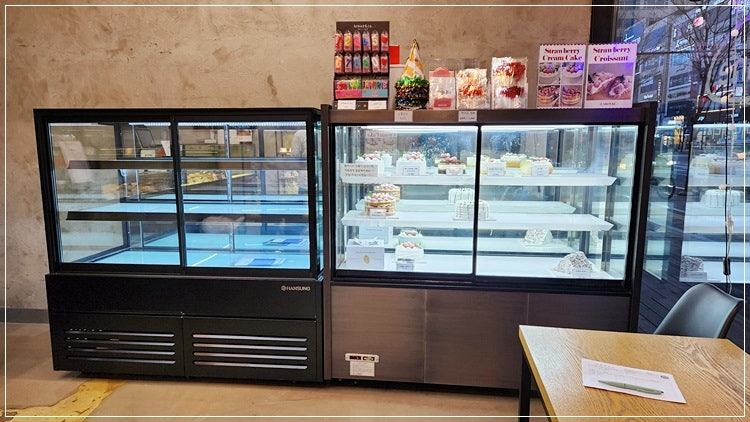
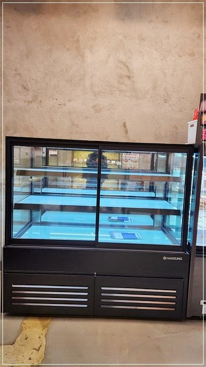
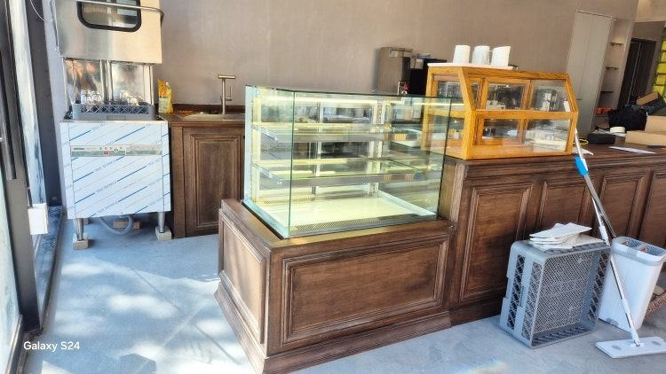
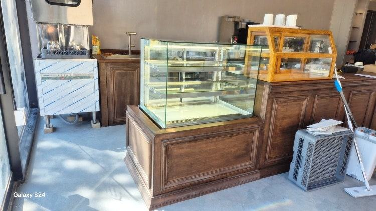
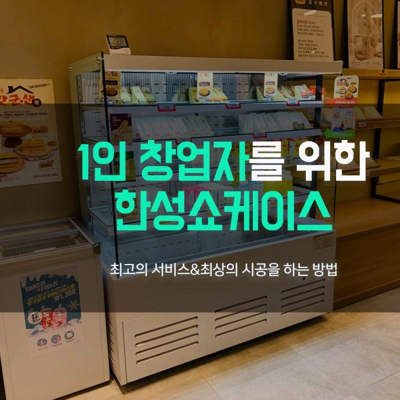
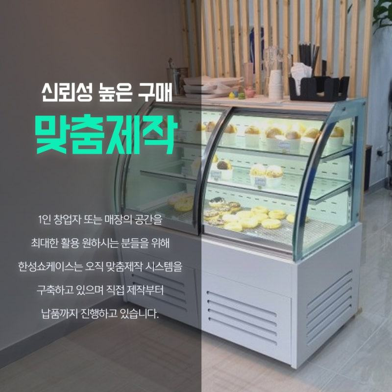

제과쇼케이스
제과쇼케이스 도어, 앞문형·뒷문형·양문형 무엇이 맞을까

포장된 디저트를 손님이 직접 고르는 매장은 앞문형, 직원이 케이크를 꺼내 포장해 주는 매장은 뒷문형, 셀프 진열과 직원 응대를 함께 하는 매장은 양문형이 잘 맞습니다. 여기에 카운터 뒤 작업 공간 폭에 따라 슬라이딩과 여닫이 중에서 고르시면 됩니다.
안녕하세요. 베이커리와 디저트 카페의 제과쇼케이스를 맞춤으로 만드는 한성쇼케이스입니다.
제과쇼케이스 상담에서 의외로 오래 고민하시는 것이 문 위치입니다. "손님이 직접 꺼내게 할까, 우리가 꺼내 드릴까"는 결국 매장 운영 방식을 정하는 문제라서 쉽게 결정하기 어렵습니다.
문 위치가 정해지면 쇼케이스를 어디에 둘지, 계산대와 포장대를 어떻게 붙일지, 직원이 몇 명 필요할지까지 함께 정해집니다.
반대로 문을 잘못 고르면 직원 동선이 꼬이거나 손님이 줄을 서서 기다리는 일이 생깁니다.
오늘은 제과쇼케이스 도어를 앞문형, 뒷문형, 양문형으로 나눠 어떤 매장에 맞는지, 문 여는 방식은 어떻게 고르면 되는지 정리해 보겠습니다.
1. 앞문형, 손님이 직접 고르는 매장
앞문형은 손님 쪽에 문이 있어 손님이 직접 열고 상품을 꺼냅니다. 개별 포장된 마카롱, 쿠키, 병 디저트, 샌드위치처럼 집어 들기 쉬운 상품이 많은 매장에 잘 맞습니다.
직원이 계산에만 집중할 수 있어 바쁜 시간대에 줄이 덜 생깁니다.
앞문형은 매장에 들어서자마자 손님 눈에 들어오는 위치에 놓이는 경우가 많아 인테리어 요소로서 역할도 큽니다.
손잡이 위치와 문이 열리는 반경이 손님 동선을 막지 않는지 함께 확인하세요.
- 개별 포장 상품 중심 매장
- 손님 쪽 통로 폭 확인
2. 뒷문형, 직원이 꺼내 주는 매장
뒷문형은 카운터 안쪽에 문이 있어 직원이 꺼내 드립니다. 조각 케이크, 크림이 많은 디저트처럼 포장 전 상태로 진열하는 상품은 손님이 직접 만지기 어렵기 때문에 뒷문형이 기본입니다.
손님 쪽은 문 없이 유리만 보여 진열이 깔끔합니다.
직원이 하루 종일 문을 여닫으니 카운터 뒤 작업 공간 폭이 중요합니다. 문을 열었을 때 뒤쪽 작업대나 커피 머신과 부딪히지 않는지, 직원 두 명이 동시에 지나갈 수 있는지 미리 재 보세요.
뒷문형은 손님 쪽 유리 높이와 각도를 자유롭게 정할 수 있다는 장점도 있습니다. 사선형이나 곡선형 유리로 아랫단 케이크까지 잘 보이게 하면, 문 없는 면이 그대로 진열 효과를 키우는 창이 됩니다.


3. 양문형, 두 가지를 함께 할 때
양문형은 앞뒤 모두 문이 있습니다. 진열은 손님이 보고, 상품 보충은 직원이 뒤에서 하는 매장이나 포장 상품과 조각 케이크를 한 쇼케이스에 함께 두는 매장에 맞습니다.
손님이 앞에서 꺼내는 동안 직원이 뒤에서 채울 수 있어 진열이 비는 시간이 줄어듭니다.
다만 문이 두 배라 관리할 패킹도 늘어납니다. 손님 쪽 문을 실제로 얼마나 쓸지 먼저 생각해 보시고, 셀프 비중이 낮다면 뒷문형으로 정리하는 편이 냉기 관리에 유리합니다.
4. 슬라이딩과 여닫이
문 위치를 정했다면 여는 방식을 고릅니다. 슬라이딩은 옆으로 밀어 열어 앞 공간이 필요 없어 좁은 카운터 뒤에 잘 맞습니다.
여닫이는 넓게 열려 홀케이크처럼 큰 상품을 넣고 빼기 편하지만 문이 열리는 반경만큼 공간이 필요합니다.
어떤 방식이든 문을 짧게 여닫는 것이 디저트 상태를 지키는 기본입니다. 자주 나가는 메뉴는 문 가까운 칸에 두면 여는 시간이 줄어듭니다.
- 좁은 작업 공간은 슬라이딩
- 큰 홀케이크가 많으면 여닫이
- 인기 메뉴는 문 가까운 칸에
체크리스트
- 포장 상품과 비포장 상품 비율
- 셀프 판매 여부
- 카운터 뒤 작업 공간 폭
- 손님 쪽 통로 폭
- 슬라이딩·여닫이 선택
- 자주 나가는 메뉴 위치
현장에서 자주 보는 경우: 손님 시선과 직원 동선을 함께 정하는 상담
편의점, 베이커리, 카페처럼 목적이 다른 매장에서 제과쇼케이스 제작을 의뢰하시면, 먼저 가게에 들어왔을 때 손님 시선에서 보기 좋은 위치와 디자인을 함께 이야기합니다.
기성 사이즈 제품으로는 원하는 분위기와 동선을 맞추기 어려운 경우가 많기 때문입니다.
문 방식도 이 상담에서 같이 정해집니다. 손님이 보는 쪽과 직원이 여는 쪽이 정해져야 쇼케이스 위치와 디자인이 확정되기 때문입니다.
조명도 원하는 만큼 조절할 수 있도록 설치하고, 직영 공장과 연계한 A/S로 사용 중 수리가 필요할 때 대응해 드립니다.





자주 묻는 질문
앞문형으로 케이크를 진열해도 괜찮을까요?
포장된 케이크라면 가능합니다. 포장 없이 진열하는 조각 케이크는 손님이 직접 꺼내기 어렵고 위생 관리도 까다로워 뒷문형을 권해 드립니다.
기존 뒷문형 쇼케이스를 앞문형으로 바꿀 수 있나요?
구조상 문 위치를 바꾸기는 어려운 경우가 많습니다. 운영 방식을 바꾸실 계획이라면 추가 쇼케이스를 앞문형으로 두는 방법도 함께 검토해 보세요.
슬라이딩 문이 잘 안 밀려요.
레일에 빵가루나 이물질이 끼면 뻑뻑해집니다. 레일을 자주 닦아 주시고, 그래도 걸리면 점검을 받아 보세요.
매장 조건에 맞춰 만드는 한성쇼케이스
원하시는 제품 사진과 설치할 공간 사진만 보내 주셔도 매장에 맞는 구성을 추천해 드립니다.
- 전국 240여 개 A/S 전담 센터 운영
- 본사 대량 자재 매입으로 품질 대비 합리적인 가격
- 유럽제·삼성 냉각 콤프레셔 적용
- 국내 최초 쇼케이스 전문 디자이너 상주
매장 폭과 원하는 진열 구성을 알려 주세요. 실측과 견적을 안내해 드립니다.
031-986-2458